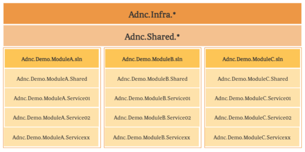

Modular monolith first
Strict boundaries from day one
Define service ownership and module boundaries before deployment boundaries become expensive.
Open-source .NET 8 framework
ADNC is a pragmatic .NET 8 framework for modular monoliths, distributed microservices, production-grade infrastructure, and a working reference implementation.
Why ADNC
Define service ownership and module boundaries before deployment boundaries become expensive.
Start pragmatic, then move toward distributed deployment when the operational return is clear.
Use consistent abstractions for gateway routing, discovery, configuration, auth, events, cache, observability, and resilience.
Architecture at a glance

Ocelot-based API gateway with routing, authentication integration, Consul provider, and resilience policies.
Reusable packages for Consul, Redis, repositories, event bus, ID generation, helpers, and core primitives.
Common application, domain, repository, remote-call, and Web API building blocks.
Business services that show layered, compact, and DDD-oriented structures side by side.
Core capabilities
Demo services
Organization, users, roles, permissions, dictionaries, and configuration.
Classic layered architecture with separated application contractsLogs, audits, and operations management.
Classic layered architecture with contracts merged into the application layerCustomer management.
Minimal single-project serviceOrder management.
DDD-style service with a domain layerWarehouse management.
DDD-style service with a domain layerStart with the reference implementation